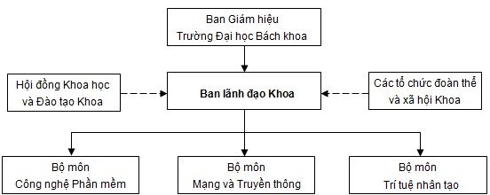

<>
Cơ cấu tổ chức

Ban lãnh đạo Khoa nhiệm kỳ 2025-2030
Phó Trưởng khoa Phụ trách: TS. Lê Thị Mỹ Hạnh
Email: ltmhanh@dut.udn.vn; ĐT: 0905 737 577
Phụ trách:
- Quản lý chung các hoạt động của khoa.
- Trực tiếp phụ trách:
- Công tác tổ chức cán bộ, nhân sự
- Công tác thi đua khen thưởng
- Công tác đào tạo đại học
- Công tác cơ sở vật chất, mua sắm thiết bị
- Công tác truyền thông, quan hệ doanh nghiệp
- Theo dõi công tác thu chi của khoa thông qua thư ký khoa.
- Chấp hành sự chỉ đạo của Chi bộ, phối hợp với tổ chức Công đoàn, Đoàn Thanh niên để thực hiện các nhiệm vụ của Khoa.
Phó Trưởng khoa: TS. Phạm Công Thắng
Email: pcthang@dut.udn.vn; ĐT: 0905 983 126
Phụ trách:
- Phụ trách công tác NCKH; Hợp tác quốc tế; công tác tuyển sinh; công tác đào tạo sau đại học.
- Phụ trách công tác sinh viên, theo dõi các hoạt động của Đoàn thanh niên.
- Cùng với Phó trưởng khoa phụ trách thực hiện công tác kiểm định, đảm bảo chất lượng.
- Giúp Trưởng Khoa điều hành công việc của khoa khi được Phó Trưởng Khoa phụ trách uỷ quyền và phân công.